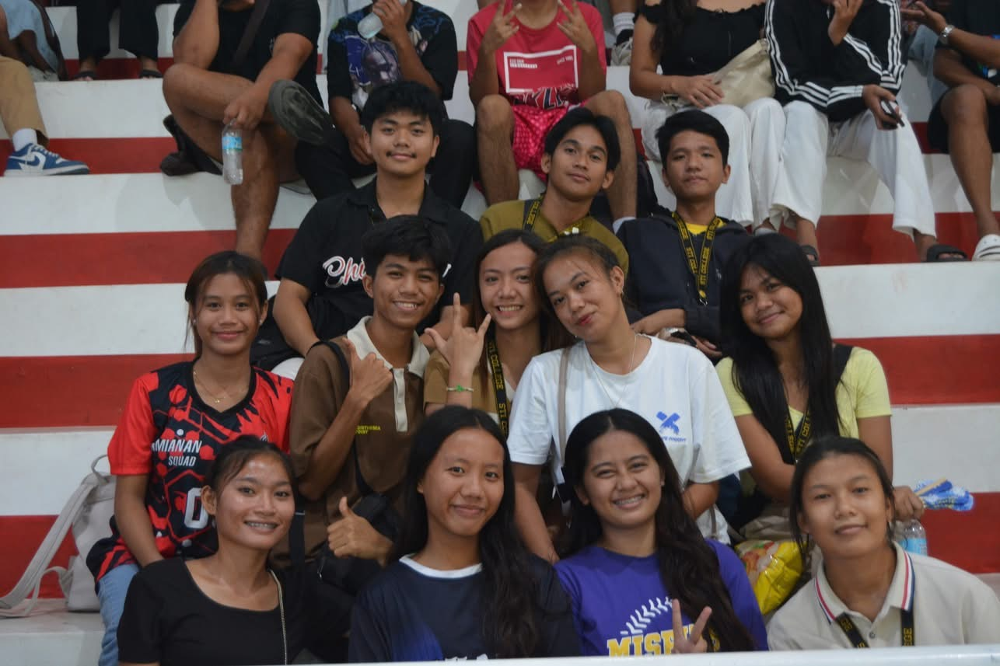

01
Ministry
Preaching the word of God.

Personal side
A curious IT student who loves building pretty interfaces, learning new things, collecting little memories, and turning ideas into working web pages.
See my storyAfter class and code
Preaching the word of God.

Spending time by the water, reflecting on life and finding peace while catching fish.
Expressing creativity through colors and brushstrokes on canvas.

Time to reflect, recharge, and find inner peace.
Components of my life